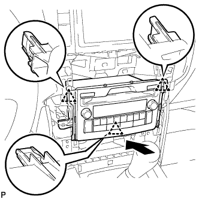
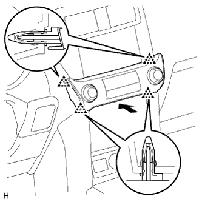

ВЫКЛЮЧАТЕЛЬ ЗАЖИГАНИЯ (для моделей с левосторонним рулевым управлением) > УСТАНОВКА |
| 1. УСТАНОВИТЕ ВЫКЛЮЧАТЕЛЬ ЗАЖИГАНИЯ |
Введите в зацепление 2 захвата, чтобы установить выключатель зажигания.
Подсоедините разъем.
| 2. УСТАНОВИТЕ НИЖНЮЮ ЦЕНТРАЛЬНУЮ ОТДЕЛОЧНУЮ НАКЛАДКУ ПАНЕЛИ ПРИБОРОВ В СБОРЕ (для моделей без дисплея) |
Введите в зацепление 3 фиксатора и направляющую, чтобы установить нижнюю центральную отделочную накладку панели приборов.
Вверните 2 болта <Е>.
| 3. УСТАНОВИТЕ РАДИОПРИЕМНИК В СБОРЕ (для моделей с дисплеем) |
Подсоедините разъемы.
|  |
Вставьте радиоприемник и введите в зацепление 3 зажима с обратной стороны.
Закрепите радиоприемник 4 болтами.
| 4. УСТАНОВИТЕ ВЕРХНЮЮ ПЕРЕДНЮЮ ОБЛИЦОВКУ ПАНЕЛИ КОНСОЛИ |
Введите в зацепление 5 фиксаторов, чтобы установить переднюю накладку верхней облицовки панели пола.
| 5. УСТАНОВИТЕ ИНТЕГРИРОВАННУЮ ПАНЕЛЬ УПРАВЛЕНИЯ В СБОРЕ |
|  |
Подсоедините разъем.
Установите интегрированную панель управления в сборе и введите в зацепление 4 фиксатора.
| 6. УСТАНОВИТЕ ПРАВУЮ ОТДЕЛОЧНУЮ НАКЛАДКУ ПАНЕЛИ ПРИБОРОВ |
Подсоедините разъем.
Введите в зацепление 4 фиксатора, чтобы установить крайнюю отделочную накладку панели приборов.
| 7. УСТАНОВИТЕ ПОДУШКУ ОТДЕЛОЧНОЙ НАКЛАДКИ ПАНЕЛИ ПРИБОРОВ № 1 |
| 8. УСТАНОВИТЕ ЛЕВУЮ ОТДЕЛОЧНУЮ НАКЛАДКУ ПАНЕЛИ ПРИБОРОВ |
Введите в зацепление 4 фиксатора, чтобы установить крайнюю отделочную накладку панели приборов.
| 9. УСТАНОВИТЕ ПОДУШКУ ОТДЕЛОЧНОЙ НАКЛАДКИ ПАНЕЛИ ПРИБОРОВ № 2 |
Введите в зацепление 5 фиксаторов, чтобы установить подушку отделочной накладки панели приборов № 2.